<div  class="w-full h-auto font-outfit">
    <div class="max-w-[95%] mx-auto flex justify-between items-center lg:items-start p-2 pt-8 lg:pt-4 gap-2">
        <div class="flex flex-col items-start leading-none font-sans font-extralight text-[1.125rem] md:text-[1.25rem] lg:text-[1.5rem] gap-2 lg:gap-0">
            <span>DE</span>
            <span>EN</span>
        </div>
        <h1 class="flex text-[2rem] lg:text-[3rem] font-bold">Baumeister</h1>
        <ul class="flex-col text-[1.125rem] font-extralight hidden lg:block">
            <li class="w-full text-center"><a href="#">About</a></li>
            <li class="w-full text-center"><a href="#">Services</a></li>
            <li class="w-full text-center"><a href="#">References</a></li>
            <li class="w-full text-center"><a href="#">Contact</a></li>
        </ul>
        <button id="menuBtn" class="w-12 h-12 relative overflow-hidden flex items-center justify-center lg:hidden"
            onclick="toggleMobileMenu()">
            
            
            <span id="menu-close" class="absolute text-white font-extrabold hidden">X</span>
        </button>
        <div id="mobileMenu" class="absolute top-32 left-0 right-0 mx-6 p-6 hidden lg:hidden z-50">
                <ul class="flex flex-col items-center gap-5 font-medium text-[2rem] text-green">
                    <li class="w-full text-center"><a href="#">About</a></li>
                    <li class="w-full text-center"><a href="#">Services</a></li>
                    <li class="w-full text-center"><a href="#">References</a></li>
                    <li class="w-full text-center"><a href="#">Contact</a></li>
                </ul>
        </div>

    </div>
</div>
